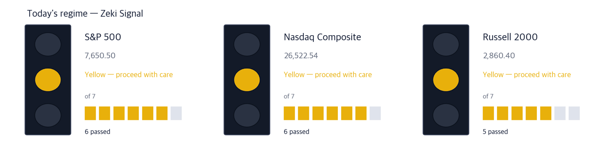
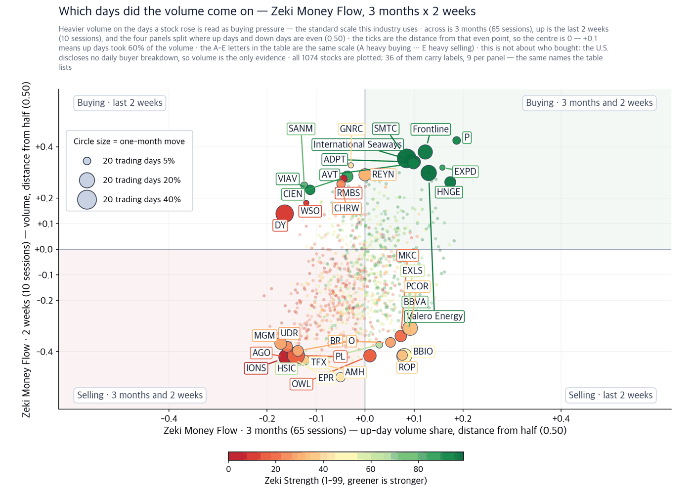
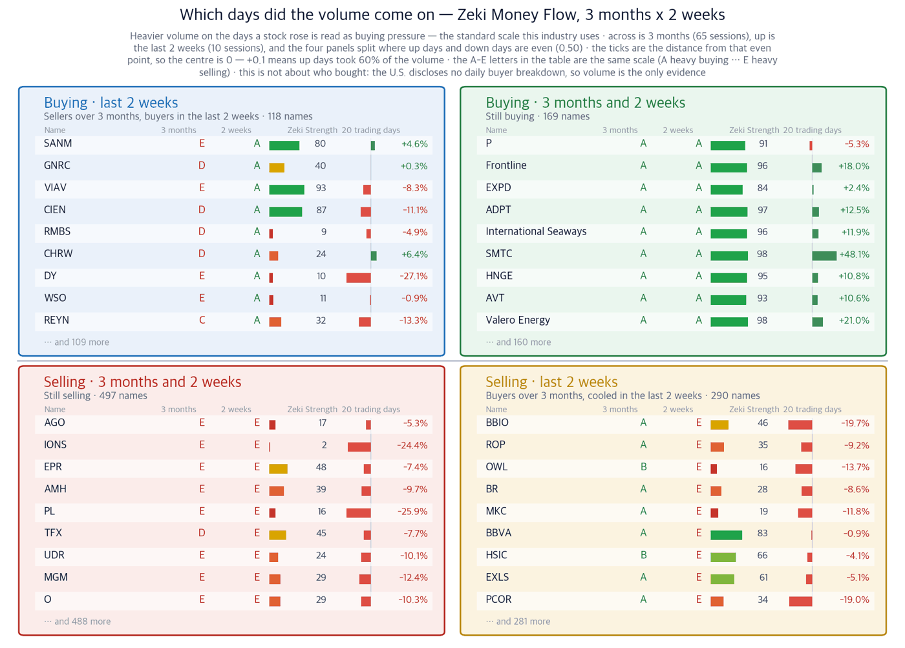

Dow 51,682.64 | Nasdaq Composite 26,522.54 | S&P 500 7,650.50 | Russell small-cap 2,860.40 | 10-year Treasury 5.00% | Zeki Signal Yellow |

| Lit lamp | Today's regime. Green means buyers have the edge, yellow means wait, red means no new buys. |
| Filled squares | How many of the 7 conditions passed. More filled means firmer market structure. |
| All filled but not green | Something else pulled the grade down one step. The reason is printed under the lamp. |
The Zeki Signal scores the market on seven tests and reduces them to one light. Green means buying has the edge, yellow means stand aside, red means do not buy. The S&P 500 and the Nasdaq Composite pass six of the seven, so both are yellow. The Russell small-cap index passes five. 대기 is what the light asks of you today.
West Texas Intermediate closed Friday at $100.30 a barrel, down 1.58% on the day. On the same day the average U.S. pump price for diesel rose again, to $6.45 a gallon. Crude falling while fuel does not follow it down is unusual. This year the scarce thing is not the oil. It is the ship that carries it.
Three things to settle before the open, and what to do now about each.
| Date | What to watch | Why it matters |
|---|---|---|
| Thursday, Sept 24 | Trump-Xi meeting begins in Washington | If rare earths and AI reach the agenda, chip and materials names move first |
| Thursday, Sept 24 | New-home sales for August | The first read on whether housing demand bent after yields reached 5% |
| Friday, Sept 25 | Revised consumer sentiment for September | Where higher fuel prices show up in household sentiment first |
Drone attacks shut Saudi Arabia's East-West Pipeline earlier this month. That line carried Persian Gulf crude past the Strait of Hormuz to the Red Sea port of Yanbu. With it closed, the oil went back through the strait. (The Wall Street Journal) Hiring a supertanker to load inside the Gulf and transit Hormuz passed $1 million a day. That is $26 a barrel, about a quarter of the value of the cargo it carries. Freight is normally a small fraction of that value. Of the roughly 900 supertankers in the world, 15% are now sitting off the coast of Oman. Ships routed around the Cape of Good Hope add about two weeks to the voyage. What a refiner pays is the price of the crude plus the freight. That is why the pump did not follow crude down.
| Okeanis Eco Tankers | Well grounded |
| Close | 1-day | 1-week | 20 sessions | 3 months | Zeki Strength | Zeki Money | vs 52wk high |
|---|---|---|---|---|---|---|---|
| $84.95 | -1.56% | +11.56% | +32.53% | +61.87% | 98 | A | -1.6% |
| Who | Okeanis Eco Tankers, an owner of very large crude carriers. |
| What | It earns the charter rate directly when hire prices rise. |
| When | Since the East-West Pipeline was shut earlier this month. |
| Where | Listed on the New York Stock Exchange. |
| Why | Because crude was pushed back through the strait and ships ran short. |
| How | Short ship-to-ship shuttle runs off Oman tie the vessels up. |
| Frontline | Well grounded |
| Close | 1-day | 1-week | 20 sessions | 3 months | Zeki Strength | Zeki Money | vs 52wk high |
|---|---|---|---|---|---|---|---|
| $51.42 | -4.83% | +4.49% | +18.04% | +25.63% | 96 | A | -4.8% |
| Who | Frontline, an owner of a large crude-tanker fleet. |
| What | The most heavily traded name on this list. |
| When | It fell 4.83% on September 18 alone. |
| Where | Listed on the New York Stock Exchange. |
| Why | Because rates on routes such as West Africa to China rose as well. |
| How | Cape of Good Hope detours lock ships up for two extra weeks. |
| International Seaways | Well grounded |
| Close | 1-day | 1-week | 20 sessions | 3 months | Zeki Strength | Zeki Money | vs 52wk high |
|---|---|---|---|---|---|---|---|
| $111.15 | +0.56% | +7.24% | +11.87% | +31.55% | 96 | A | +0.0% |
| Who | International Seaways, which carries both crude and refined products. |
| What | It straddles both markets, so one can support the other. |
| When | Its September 18 close sits at its one-year high. |
| Where | Listed on the New York Stock Exchange. |
| Why | Because crude and product freight are rising at the same time. |
| How | With Yanbu loading no crude, voyages have lengthened. |
The ships that carry crude and the ships that carry diesel and gasoline are different vessels. It is the second kind that sets the pump price. On September 18 Torm appeared among the leaders rising on heavier volume. (IBD) On the same day diesel rose, money went into a product carrier.
| Torm | Grounded |
| Close | 1-day | 1-week | 20 sessions | 3 months | Zeki Strength | Zeki Money | vs 52wk high |
|---|---|---|---|---|---|---|---|
| $38.23 | +4.37% | +8.98% | +23.08% | +29.99% | 94 | C | +0.0% |
| Who | Torm, an owner of refined-product tankers. |
| What | It carries diesel and gasoline, not crude. |
| When | It rose 4.37% on September 18 to close at a one-year high. |
| Where | Listed on the Nasdaq. |
| Why | Because retail diesel has been rising, to $6.45 a gallon. |
| How | When crude carriers are tied up, product carriers grow scarce as well. |
It is easy to read rising freight as bad for refiners. For refiners that buy crude across an ocean, it is. Refiners on the U.S. Gulf Coast are in a different position. Most take domestic crude by pipeline and pay no Hormuz freight at all. When crude falls and diesel rises, their margin widens rather than narrows. Valero Energy is up 74.90% over three months and ended the week at a one-year high.
| Valero Energy | Well grounded |
| Close | 1-day | 1-week | 20 sessions | 3 months | Zeki Strength | Zeki Money | vs 52wk high |
|---|---|---|---|---|---|---|---|
| $413.28 | +0.18% | +5.86% | +21.02% | +74.90% | 98 | A | +0.0% |
| Who | Valero Energy, one of the largest U.S. refiners. |
| What | It buys crude and sells diesel and gasoline. |
| When | It rose 0.18% on September 18 to close at a one-year high. |
| Where | Its refining capacity is concentrated on the Gulf Coast. |
| Why | Because crude fell while product prices rose, widening the margin. |
| How | It receives crude by pipeline and pays little ocean freight. |
| Name | ①up over 20 sessions | ②Strength 90+ | ③flow 3mo A or B | ④2wk not weaker | Met | Weight of evidence |
|---|---|---|---|---|---|---|
| Okeanis Eco Tankers (ECO) | O | O | O | O | 4/4 | Well grounded |
| Frontline (FRO) | O | O | O | O | 4/4 | Well grounded |
| International Seaways (INSW) | O | O | O | O | 4/4 | Well grounded |
| Teekay Tankers (TNK) | O | O | O | O | 4/4 | Well grounded |
| DHT Holdings (DHT) | O | O | O | O | 4/4 | Well grounded |
| Torm (TRMD) | O | O | X | O | 3/4 | Grounded |
| Scorpio Tankers (STNG) | O | X | O | O | 3/4 | Needs checking |
| Valero Energy (VLO) | O | O | O | O | 4/4 | Well grounded |
The four columns are: up over 20 sessions; Zeki Strength of 90 or more; a three-month Zeki Money grade of A or B; and no weakening over the past two weeks. The count of O marks sets the label. Six of the eight clear all four, and all six are rising for the same reason.
The United States publishes no daily flow by investor type, so there is no direct record of what institutions bought on a given day. We therefore measure buying pressure - how far a stock's trading concentrated on the days it rose - and call it Zeki Money. This is an estimate of accumulation, not a tally. We measured 1,074 names as of the September 18 close.

| One dot | One stock. Its position is simply its two values, and the horizontal and vertical rules through the middle are the centre line for each. The four corner labels say what each quadrant means. |
| Dot size | The last month's move, up or down. Bigger means it moved more. |
| Dot colour | Zeki Strength — greener is stronger. |
| Only 30 | Korean and ticker labels overlap beyond that. The names left out sit near the centre, where little moved. |

| What this does not say | Volume and price over the same period, side by side. It does not forecast — measured over 21 years of US data, the four panels were indistinguishable in what followed, and the gap between the top and bottom grades was 0.03pp, effectively nothing. So this is a picture of where a stock stands now, not a place to trade from. It also cannot say who bought: the US publishes no daily breakdown by investor type, so volume is the only evidence. |
| Four panels | The two measures are each compared with a centre line. Top right cleared both, bottom left cleared neither, and the other two cleared one. Each panel's title is a plain sentence saying what that means. |
| The two middle columns | Where the two periods are compared. If they carry letters A-E, that is the standard scale this industry uses: A heavy buying, B buying, C an even split, D selling, E heavy selling (a rank of all names in fifths, so A is the top 20%). If they carry numbers, that is net buying over the period. |
| Nine per panel | The largest movers in that panel. The rest are counted at the foot of the panel. These same nine per panel are the names labelled on the scatter. |
| Month bar | Zero at the centre: right is up, left is down. Compare lengths within one panel only — each panel is scaled to itself. |
| Zeki Strength | A 1-99 rank. Longer and greener means the stock's price is stronger than the market. |
| Name | Zeki Money 3mo | Volume to beat (50-day average) | Past two weeks |
|---|---|---|---|
| Okeanis Eco Tankers (ECO) | A | 570,506 | +22.12% |
| Frontline (FRO) | A | 2,495,476 | +13.21% |
| International Seaways (INSW) | A | 590,764 | +8.71% |
| Teekay Tankers (TNK) | A | 441,564 | +9.90% |
| DHT Holdings (DHT) | B | 3,287,428 | +15.26% |
| Torm (TRMD) | C | 910,996 | +11.85% |
| Scorpio Tankers (STNG) | B | 778,630 | +8.80% |
| Valero Energy (VLO) | A | 2,876,662 | +11.49% |
An A or B in the middle column means buying pressure built behind the move. Torm alone is a C. A day that exceeds the volume in the third column is the confirming signal.
| Weight of evidence | Names | Beat S&P 500 | Winners led by | Losers trailed by | All averaged |
|---|---|---|---|---|---|
| Well grounded | 18 | 14 / 18 | +5.12%p | -1.31%p | +3.69%p |
| Grounded | 7 | 4 / 7 | +3.65%p | -3.05%p | +0.78%p |
| Needs checking | 9 | 4 / 9 | +1.73%p | -1.24%p | +0.08%p |
| No basis | 3 | 0 / 3 | — | -1.00%p | -1.00%p |
| Excluded | 1 | 0 / 1 | — | -5.55%p | -5.55%p |
| Well grounded 18 | +3.69%p | ||||||
| Grounded 7 | +0.78%p | ||||||
| Needs checking 9 | +0.08%p | ||||||
| No basis 3 | −1.00%p | ||||||
| Excluded 1 | −5.55%p |
The centre line is S&P 500. Right is ahead, left is behind. The grey number is how many names are in that band.
Of 18 Well grounded names, 14 beat S&P 500. Those 14 led by 5.1%p on average; the 4 that lost trailed by 1.3%p. All together: +3.7%p.
Toward the verdict. Across both markets, 24 of 60 cases have 5 trading days behind them. At 60 we run the test we fixed in advance, once, and print what it says. Until then the table above is interim.
Zeki Strength ranks a stock from 1 to 99 against the 1,098 names we follow; above 90 means the top 10%. Zeki Money grades buying pressure from A to E. When we tested that grade on another market's data it did not predict the following month. So we use it only as a last check: first the story has to hold and the price has to follow, and only then do we ask whether the trading followed too.
This issue was built from the September 21 print edition of The Wall Street Journal and from IBD pieces dated September 18 and September 20. The figures are our own measurements as of the September 18 close.
Earnings are light this week. Costco (COST), Darden (DRI) and KB Home (KBH) report earnings. All three meet fuel costs and interest rates at once, so they show whether those costs can be passed on in price.